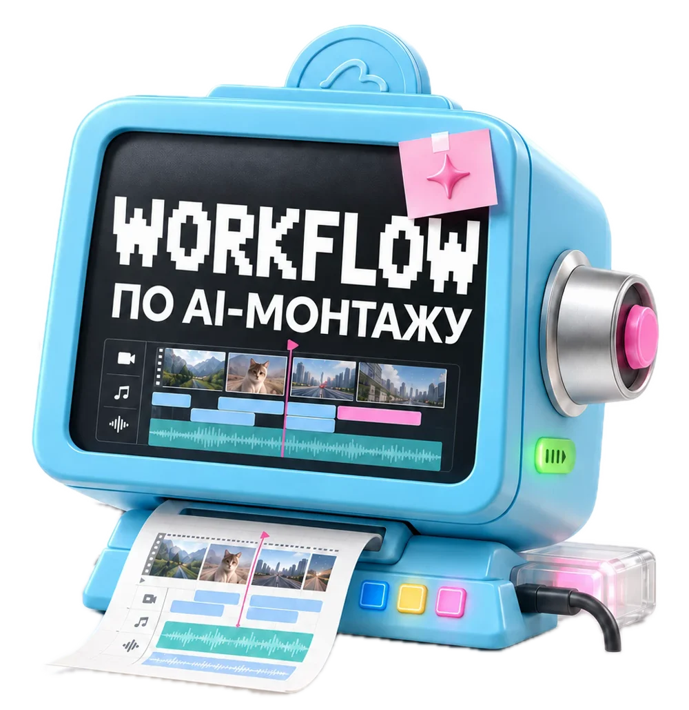
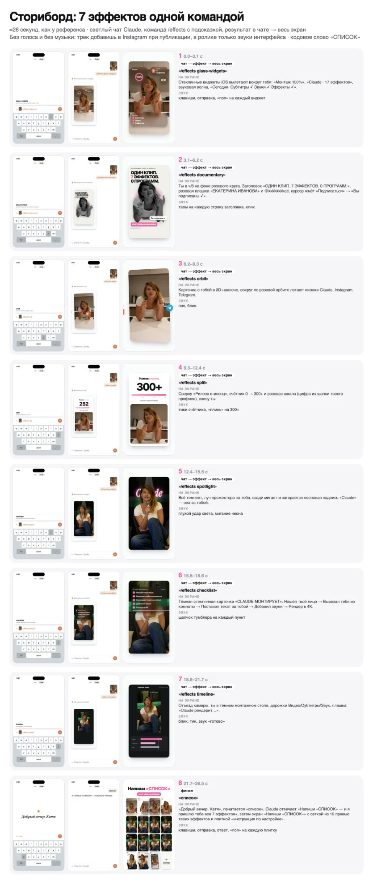
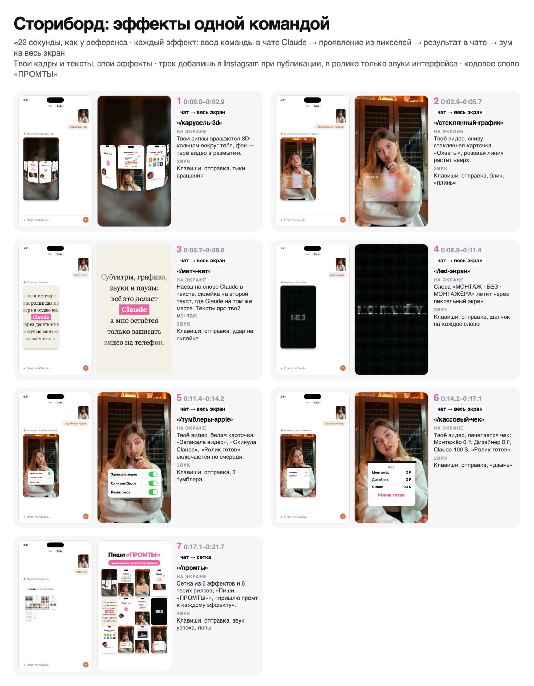
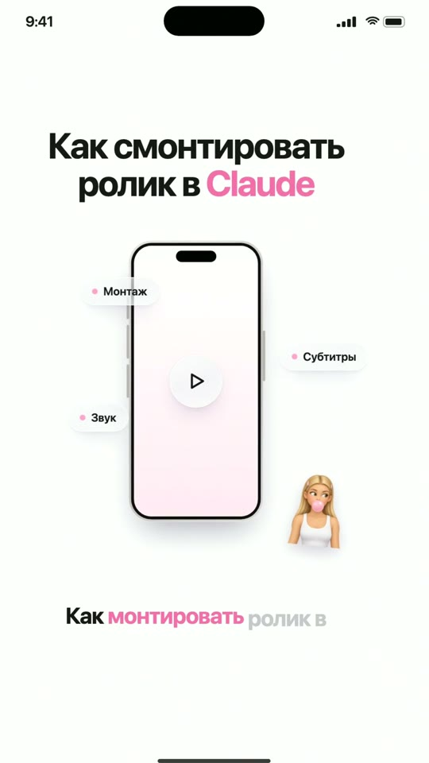
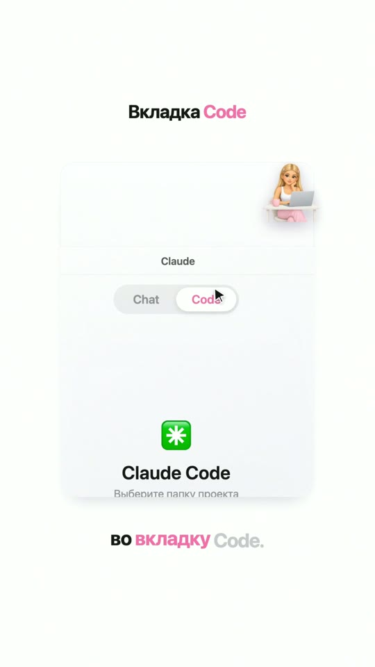
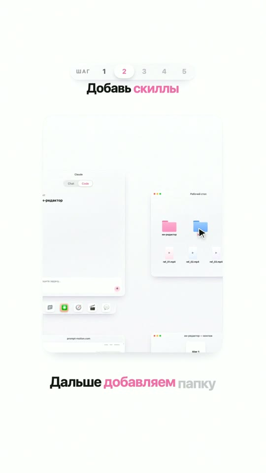
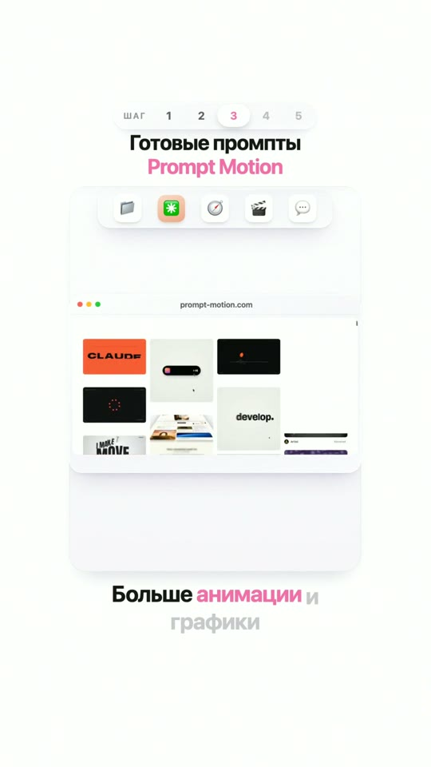
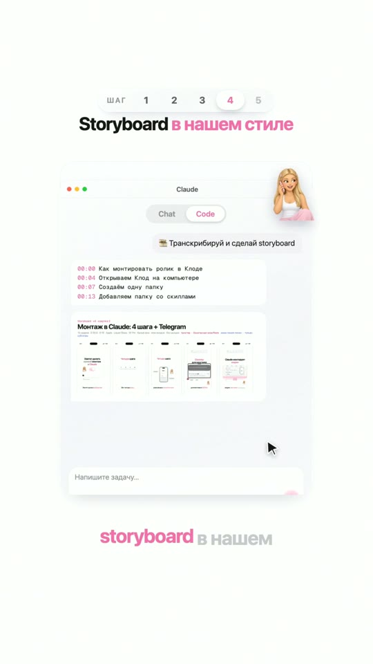
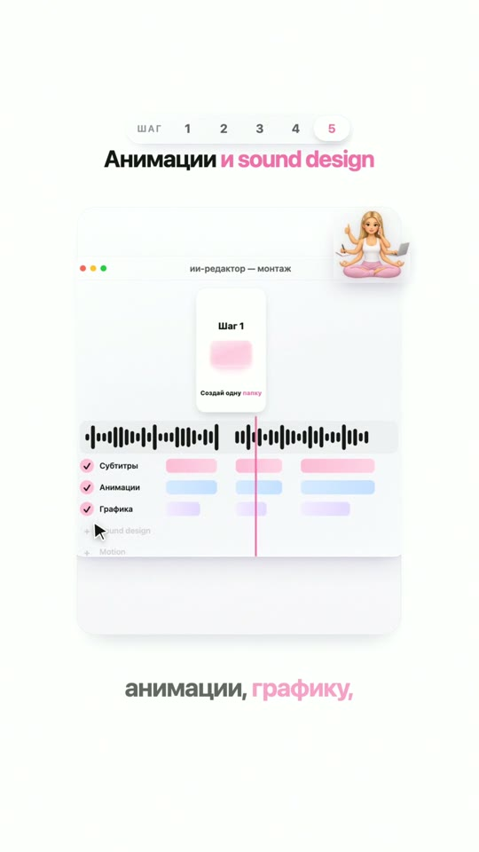

От исходника до готового ролика — за 15 минут

Монтажный стол для Claude — всё в одном месте.
Папка, инструменты и скиллы — один раз и надолго.
Claude разбирает твои ролики и собирает гайд по стилю.
План ролика по секундам, который правится быстрее, чем видео.
Один промпт на монтаж, дальше — правки с таймкодами.
8 шагов до своего ИИ-монтажёра. Жми «Скопировать» и вставляй в Claude Code.
Сам по себе он умеет только писать код. Поэтому мы даём ему три вещи:
| Что | Зачем |
|---|---|
| Инструменты | чтобы он мог резать, анимировать и рендерить |
| Скиллы | чтобы делал это качественно, а не «как получится» |
| Твой стиль и сториборд | чтобы ролик был твоим, а не «в стиле Claude» |
| Папка | Что в ней |
|---|---|
01_исходники | озвучка, видео, картинки |
02_референсы | примеры стиля, сториборд |
03_экспорт | готовые ролики |
Покажи, какие папки и файлы ты видишь в этой папке.
Программы, которыми Claude режет, анимирует и рендерит. Ставим до скиллов.
| Программа | Для чего |
|---|---|
| Remotion | монтаж кодом |
| HyperFrames | моушн-графика и анимация |
| FFmpeg | нарезка, склейка, звук |
| Whisper | голос в текст с таймкодами |
| yt-dlp | скачивает видео по ссылке |
Установи на мой Mac инструменты для видеомонтажа и проверь, что каждый работает. 1. Homebrew — менеджер программ для Mac (https://brew.sh), если его ещё нет. 2. Node.js версии 22 или новее — нужен для Remotion, HyperFrames и скиллов. 3. Python 3 — нужен для Whisper. 4. FFmpeg — нарезка, склейка, звук и рендер (https://ffmpeg.org): brew install ffmpeg 5. yt-dlp — скачивает видео по ссылке (https://github.com/yt-dlp/yt-dlp): brew install yt-dlp 6. Whisper — расшифровка голоса в текст с таймкодами (https://github.com/openai/whisper). Если есть более быстрая версия для Mac, предложи её. 7. Remotion — монтаж кодом (https://www.remotion.dev): проверь, что npx create-video работает. 8. HyperFrames — моушн-графика и анимация (https://github.com/heygen-com/hyperframes): проверь, что npx hyperframes работает. Перед каждой командой коротко объясняй, что она делает. Если что-то уже установлено, не переустанавливай, просто проверь версию. Если что-то не ставится, не останавливайся: отметь и иди дальше. В конце покажи таблицу: инструмент | для чего | версия | статус.
Подготовь мой Windows-компьютер для видеомонтажа в этом проекте. Проверь Node.js 22 или новее, Python 3, FFmpeg, yt-dlp и Whisper. Установи недостающее по официальным инструкциям для Windows. Homebrew и команды brew не используй. Проверь доступность инструментов Remotion и HyperFrames. Перед каждым действием коротко объясняй, что делаешь. Рабочие версии повторно не устанавливай. Если нужны мои действия, объясни их пошагово. Если установка не удалась, отметь и продолжи остальные проверки. В конце покажи таблицу: инструмент | для чего | версия | статус. Не отмечай инструмент рабочим без проверки запуска.
Насмотренность Claude: темп, кадр, анимация, стиль. Сам выбирает нужные.
Насмотренность Claude: темп, кадр, анимация, стиль. Нужные скиллы он выбирает сам.
Положи файл в папку «ИИ-редактор» и отправь:
Найди montazh.skill в папке проекта. Прочитай его и установи содержащийся скилл в .claude/skills этого проекта. Сохрани все необходимые файлы скилла. Проверь, что есть SKILL.md, и сообщи, как его использовать. Если формат не распознаётся, объясни причину. Исходный файл не удаляй.
Установи в этот проект все скиллы для видеомонтажа и дизайна.
Все скиллы клади в папку .claude/skills этого проекта.
Перед каждой установкой коротко пиши, что это за скилл.
Если какой-то не ставится, не останавливайся: отметь и иди дальше.
Если программа установки спрашивает, куда ставить, выбирай
Claude Code и папку этого проекта.
МОНТАЖ
1. Remotion: npx skills add remotion-dev/skills
2. HyperFrames: npx skills add heygen-com/hyperframes
СТИЛЬ APPLE
3. Apple Video Kit:
npx github:csalamida/apple-video-kit init apple-kit
затем npm install в папке apple-kit.
Скопируй скилл apple-kit/.agents/skills/apple-video-editor
в .claude/skills.
4. Apple Motion:
git clone https://github.com/l1ghtk1d/apple-motion
скопируй папку skill/apple-motion в .claude/skills.
5. Liquid Glass:
git clone --depth 1 https://github.com/stormaref/LiquidGlassSkill
скопируй папку plugins/liquid-glass/skills/liquid-glass в .claude/skills.
ДИЗАЙН
6. UI/UX Pro Max: npx skills add nextlevelbuilder/ui-ux-pro-max-skill
7. Taste Skill: npx skills add Leonxlnx/taste-skill
8. Impeccable: npx skills add pbakaus/impeccable
9. Hallmark: npx skills add Nutlope/hallmark
10. Awesome Design MD (это не скилл, а референсы):
git clone https://github.com/VoltAgent/awesome-design-md
в папку 02_референсы/design-md.
После установки удали временные папки, которые остались
после копирования скиллов.
В конце покажи таблицу:
скилл | для чего в монтаже | команда запуска | статус.Официальный скилл монтажа кодом: сцены, текст, анимация.
npx skills add remotion-dev/skillsМоушн-графика, анимации, переходы и субтитры.
npx skills add heygen-com/hyperframesБлоки, переходы, зумы и выделения для обучающих роликов.
npx github:csalamida/apple-video-kit init apple-kitКинетическая типографика и генератор звуков.
git clone https://github.com/l1ghtk1d/apple-motionСтеклянный эффект для плашек, карточек и кнопок.
git clone --depth 1 https://github.com/stormaref/LiquidGlassSkillБаза стилей, палитр и шрифтовых пар.
npx skills add nextlevelbuilder/ui-ux-pro-max-skillДизайн-системы известных брендов как референс.
git clone https://github.com/VoltAgent/awesome-design-mdЧто положить в папки и как получить текст. Один ролик — один исходник.
| Вариант | Каким должен быть |
|---|---|
| Нейроозвучка | аудиофайл из сервиса нейроголоса |
| Своя озвучка | голос с телефона или микрофона, без пауз и шумов |
| Готовое видео | без пауз и дублей, без музыки и титров, MP4 |
Перетащи файл озвучки или видео в папку «01_исходники». Claude берёт исходник только оттуда.
В папке 01_исходники лежит мой исходник. 1. Расшифруй речь через Whisper на русском языке с точными таймкодами по фразам и по словам. 2. Проверь текст: исправь ошибки распознавания, имена, названия и термины, расставь пунктуацию. Смысл и порядок слов не меняй. 3. Отметь длинные паузы (больше 1 секунды), слова-паразиты и повторы — не удаляй, просто покажи. Сохрани в папку 01_исходники: — transcript.txt — чистый текст; — transcript.srt — субтитры с таймкодами; — words.json — таймкоды по каждому слову. Покажи мне текст с таймкодами по фразам и список мест, которые стоит проверить.
Прочитай текст и проверь имена, названия и термины.
На 00:12 правильно не «клод код», а Claude Code. Исправь во всех файлах транскрипции, сохрани таймкоды.
Claude разбирает твои ролики и собирает гайд. Чтобы всё было по-твоему.
Большинство нейро-роликов выглядят одинаково, потому что стиль никто не задал. Слова тут не помогают: «хочу оранжевый» — а какой? Пластиковый, прозрачный, пушистый? Чем конкретнее задание, тем лучше результат.
Claude разбирает ролики и собирает гайд — чтобы всё было по-твоему.
Вот ссылки на мои рилсы: [ссылка 1] [ссылка 2] [ссылка 3] Это мои ролики. Задача: вычленить из них МОЙ фирменный стиль монтажа, чтобы дальше монтировать все ролики так же. Для каждого ролика: 1. Скачай его через yt-dlp в папку 02_референсы. 2. Расшифруй речь через Whisper с таймкодами. 3. Через FFmpeg сохрани кадры каждые 0,5 секунды и внимательно их изучи. Проанализируй и найди, что повторяется во всех роликах: — хук: как я начинаю ролик, что в первые 3 секунды; — подача и структура текста; — темп: как часто меняются кадры; — типографика: шрифты, размеры, цвета, анимация текста; — фон, палитра, общая атмосфера; — графика, интерфейсы, переходы, приближения; — субтитры: стиль, расположение, выделения; — sound-дизайн. Отдели фирменные приёмы, которые есть почти везде, от случайных, которые встретились один раз. Собери из этого гайд «Мой стиль монтажа» и сохрани в папку ИИ-редактор как style-guide.md. В начале гайда напиши 5 главных правил моего стиля. Покажи мне гайд.
02_референсы и замени пункт 1 на «мои ролики лежат в папке 02_референсы».Изучи референсы в папке 02_референсы. Собери единый гайд по стилю монтажа и сохрани его в папку ИИ-редактор как style-guide.md: — палитра (HEX), шрифты и размеры текста; — композиция кадра и безопасные зоны; — как появляется и исчезает текст; — переходы, темп смены кадров, приближения; — графика, иконки, обработка изображений; — звуковые акценты. Не копируй конкретные кадры буквально. Если референсы конфликтуют, выбери самое цельное направление.
На сайте Prompt Motion собраны ролики с анимациями и готовыми промптами к ним.
| Файл | Зачем |
|---|---|
| style-guide.md | гайд по стилю: палитра, шрифты, темп, переходы, звук |
| 5 главных правил | стоят в начале гайда — по ним Claude монтирует каждый ролик |
План ролика по секундам. Монтаж только после «утверждаю».
| Без сториборда | Со сторибордом |
|---|---|
| Claude делает так, как видит сам | ты заранее утверждаешь каждую сцену |
| правишь готовое видео и каждый раз ждёшь рендер 5–10 минут | правишь картинку — это в разы быстрее |
| бесконечные правки | хороший результат с первого раза |
План ролика по секундам. Поправить его в разы быстрее, чем видео.
Сделай сториборд ролика по таймкодам. ИСХОДНИК Моя озвучка лежит в папке 01_исходники. Расшифруй речь через Whisper с точными таймкодами по словам и проверь текст на ошибки. СТИЛЬ — опирайся на style-guide.md и референсы в папке 02_референсы; — единый стиль во всём ролике; — используй установленные скиллы: Apple Video Kit, Apple Motion, Liquid Glass, HyperFrames, Remotion и дизайнерские; — формат 9:16, 1080×1920. ТАЙМИНГ — смена кадра каждые 1–2 секунды, без пауз и разрывов; — каждый кадр привязан к конкретной фразе озвучки по таймкоду; — сториборд покрывает всю длительность озвучки от первой до последней секунды; — один кадр — один главный визуальный акцент. ЧТО СДЕЛАТЬ 1. Таблица сцен: № | таймкод (от–до) | фраза озвучки | что в кадре | текст на экране | анимация | переход | звуковой эффект. 2. Для каждого кадра отрендери картинку в HyperFrames или Remotion в финальном стиле — детально, как готовый монтаж. 3. Собери все кадры в одну сетку storyboard.png, под каждым кадром подпиши номер, таймкод и короткое описание. Сохрани таблицу как storyboard.md и картинку storyboard.png в папку 02_референсы, затем покажи их мне. Монтаж не начинай, пока я не подтвержу сториборд.
Так выглядит сториборд, который не стыдно утверждать: кадр, таймкод, что на экране и какой звук. Листай внутри окна.


Кадры 4 и 9 переделай: крупнее текст, добавь экран iPhone. Остальное оставь. Покажи обновлённый storyboard.png.
| Проверь | Как понять |
|---|---|
| Покрытие | от первой до последней секунды, без разрывов |
| Текст | читается, без ошибок |
| Смысл | каждая сцена поддерживает то, что звучит |
| Стиль | все кадры — одна серия |
Один промпт собирает ролик. Без музыки!
Motion design, синхронные субтитры, sound-дизайн. Без музыки.
Сториборд утверждаю. Начинай монтаж. Используй скилл montazh, style-guide.md и утверждённый сториборд из 02_референсы. Применяй установленные скиллы: Remotion, HyperFrames, Liquid Glass и дизайнерские. СТИЛЬ Полностью сохрани стиль утверждённого сториборда: те же кадры, цвета, шрифты, композицию и порядок сцен. Формат 9:16, 1080×1920. MOTION DESIGN — плавные, точные анимации с мягким easing; — появление текста по словам и строкам, с лёгким размытием и сдвигом; — стеклянные плашки и карточки, которые выезжают, масштабируются и перестраиваются; — анимированная графика: диаграммы, графики роста, счётчики цифр, иконки, прогресс-бары, элементы интерфейса; — экраны ноутбука и телефона с живым интерфейсом: курсор, клики, скролл, открытие окон; — плавные приближения камеры к важным элементам; — переходы: стеклянные шторки, масштабирование, морфинг элементов из кадра в кадр, мягкие свайпы; — ощущение супер-диджитального, дорогого продукта. МОНТАЖ — смена кадра каждые 1–2 секунды, точно по таймкодам сториборда; — динамичный ритм без пустых пауз; — озвучка из 01_исходники: длительность, порядок и смысл не меняй. ТЕКСТ И СИНХРОНИЗАЦИЯ — субтитры строго синхронно с озвучкой, слово в слово; — текст на экране появляется точно в момент, когда звучит фраза; — все надписи в едином стиле сториборда. ЗВУК — только sound-дизайн: мягкие клики на интерфейсах, свуши на переходах, лёгкие акценты на появлении текста и графики; — звуковые эффекты тише голоса, голос всегда главный. МУЗЫКА — СТРОГО ЗАПРЕЩЕНА. Не добавляй никакую музыку, фоновые треки, эмбиент или подложку ни при каких обстоятельствах. В ролике только голос и sound-дизайн. Перед рендером отдельно проверь, что музыки в ролике нет. ПРОВЕРКА ПЕРЕД РЕНДЕРОМ — синхронизация текста и голоса; — нет чёрных, пустых или дёрганых кадров; — текст читается, ничего не обрезано; — стиль одинаковый во всех сценах. Рендер: MP4, H.264, 30 fps. Сохрани в 03_экспорт. После рендера коротко напиши, что сделано, и подтверди, что музыка не добавлена.






Трек — дело вкуса, его лучше подобрать под себя.
04_треки, положи туда музыку и допиши в промпт:В папке 04_треки лежит музыка, которую я выбираю. Возьми трек [название] и подложи под ролик тише голоса. Голос всегда главный. Другую музыку не добавляй.
Называешь время и правку — получаешь новую версию.
03_экспорт.На 00:06–00:09 увеличь заголовок, подними выше, сделай появление мягче. На 00:12 замени кадр на экран телефона. Усиль звуковой акцент при смене сцены. Остальное сохрани. Пришли обновлённый MP4.
| Плохая правка | Хорошая правка |
|---|---|
| «Сделай красивее» | «На 00:06 заголовок крупнее и выше» |
| «Что-то не так со звуком» | «На 00:14 звук перехода громче голоса — сделай тише» |
| «Переделай всё» | «Сцены 3 и 5 замени, остальное сохрани» |
Правки не обязательно печатать. Включи диктовку и скажи обычными словами, что не нравится.
Мне не нравится вставка про сайт: покажи его как запись экрана на MacBook. Видео с записью экрана лежит в 01_исходники/ekran.mov — вставь его примерно с 24-й секунды и обрежь по таймкоду. Там, где я говорю про сториборд, покажи наш готовый storyboard.png. Остальное не трогай. Пришли обновлённый MP4.
| Убери, если есть | Почему |
|---|---|
| Стена текста на экране | не читается за секунду |
| Отскок и пружина на тексте | выглядит как шаблон |
| Глитч, вспышки, «плёнка» | шаблонные переходы считываются сразу |
| Звук на каждой склейке | звук должен попадать в событие |
| Текст под кнопками Reels | важное должно стоять в безопасной зоне |
Посмотри готовый ролик из 03_экспорт как строгий монтажёр. Проверь: застывшие кадры дольше 2 секунд, чёрные и пустые кадры, обрезанные звуки слов на склейках, субтитры не в такт, текст под интерфейсом Reels, чужие шрифты и цвета. Назови 3 самые заметные проблемы с таймкодами и исправь их. Речь и порядок фраз не меняй.
Собран по шагам этого воркбука: от озвучки до файла в папке «экспорт». Нажми и посмотри со звуком.
Голова слева, экран справа. Формат 16:9.
Слева говорящая голова, справа запись экрана и анимации.
| Файл | Что это |
|---|---|
01_исходники/golova.mp4 | говорящая голова, уже смонтирована |
01_исходники/ekran/01_papki.mov | записи экрана — по порядку блоков |
…/02_claude_code_local.mov | название файла говорит, о чём запись |
…/03_instrumenty.mov | и так далее |
Смонтируй обучающее видео для YouTube. ИСХОДНИКИ — 01_исходники/golova.mp4 — говорящая голова, уже смонтирована, это основная дорожка: длительность и звук берутся из неё; — 01_исходники/ekran/ — записи экрана, пронумерованы по порядку блоков, название файла говорит, о чём запись. ЧТО СДЕЛАТЬ 1. Расшифруй golova.mp4 через Whisper с таймкодами. 2. Посмотри кадры каждой записи экрана и пойми, что в ней происходит. 3. Сопоставь записи с фразами по смыслу и по названиям файлов. Покажи мне таблицу: таймкод | фраза | что справа (файл или анимация). Монтаж не начинай, пока я не подтвержу таблицу. РАСКЛАДКА (после подтверждения) — формат 16:9, 1920×1080; — слева говорящая голова, примерно 38% ширины; — справа запись экрана или анимация, примерно 62% ширины; — обе части в карточках со скруглёнными углами, стиль по style-guide.md; — на записях экрана делай плавные зумы на то, о чём я говорю, и выделения важных кнопок; — где подходящей записи нет — анимация по смыслу фразы; — длинные записи (установка, рендер) ускоряй под длину речи и ставь плашку «ускорено». ЗВУК — голос только из golova.mp4, звук записей экрана выключи; — лёгкий sound-дизайн на переходах и зумах, тише голоса; — музыку не добавляй. Субтитры не нужны. Рендер: MP4, H.264, 30 fps, в 03_экспорт.
Непонятное слово — ищи его здесь.
Файл, с которого начинается ролик: твоя озвучка или видео.
Перевод голоса в текст с таймкодами.
Точное время в ролике: 00:12 — двенадцатая секунда.
План ролика по кадрам: что показываем, когда появляется текст, как двигается графика.
Чужой пример стиля: «хочу в таком духе».
Файл с описанием стиля ролика: цвета, шрифты, приёмы.
1080×1920 px. Вертикальный ролик для Reels, Shorts и TikTok.
Часть кадра, которую не закрывают кнопки и подпись Reels. Важное ставим туда.
Место, где один кусок видео стыкуется с другим.
Текст того, что говорят, поверх видео.
Движущаяся графика: текст, плашки, значки, которые появляются и анимируются.
Текст, который двигается в такт речи.
Как одна сцена сменяет другую.
Короткие звуки на появлении текста и смене сцен.
Сборка готового видеофайла. Может идти 5–15 минут.
Сохранение готового ролика файлом MP4.
Режим Claude, где он работает с файлами на твоём компьютере.
Папка, которую видит Claude. Здесь это «ИИ-редактор».
Инструкция «как делать задачу». Ставишь один раз — работает всегда.
Подключение внешнего сервиса, например Ары для генераций.
Программа для нарезки, склейки, звука и экспорта видео.
Программа, которая расшифровывает речь в текст.
Инструмент, которым Claude собирает видео кодом.
Инструмент для анимированных сцен и моушн-графики.
Нажимай флажок на любом промпте — он появится здесь, как «Сохранённое» в Instagram.
Открой любой урок и нажми флажок рядом с кнопкой «Скопировать». Все сохранённые промпты соберутся в этой папке.
Включай переключатели в трекере в конце каждого урока — прогресс сохранится в этом браузере.
Она есть в приложении Claude для компьютера и на подписке с доступом к Claude Code. Обнови приложение и проверь тариф.
Открой Code → «Этот компьютер» / Local и выбери папку «ИИ-редактор» заново. Разреши доступ к файлам.
Попроси: «Покажи, что не установилось, и объясни по шагам, что мне сделать». На Windows команды brew не работают — используй промпт для Windows.
Открой новую сессию в той же папке и введи /. Если скилла нет — отправь промпт установки ещё раз.
Попроси сверить таймкоды по words.json и пересобрать субтитры. Исходник не меняй.
Сборка может идти 5–15 минут. Если дольше — спроси: «На каком шаге ты сейчас и что мешает?»
Обычно не хватает картинки. Попроси назвать таймкоды пустых кадров и чем их заполнить.
Назови номера сцен и что не совпало. Правь по одной-две сцены, остальное проси сохранить.
Отметки хранятся в браузере. После очистки браузера или на другом устройстве нажми «Восстановить» в общем трекере и выбери сохранённый файл.